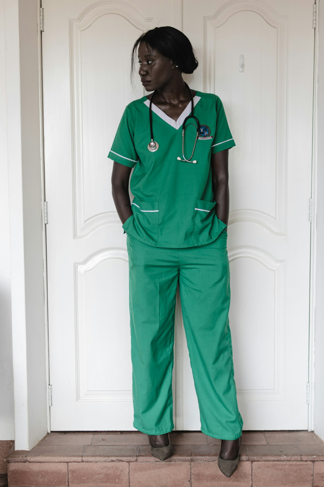
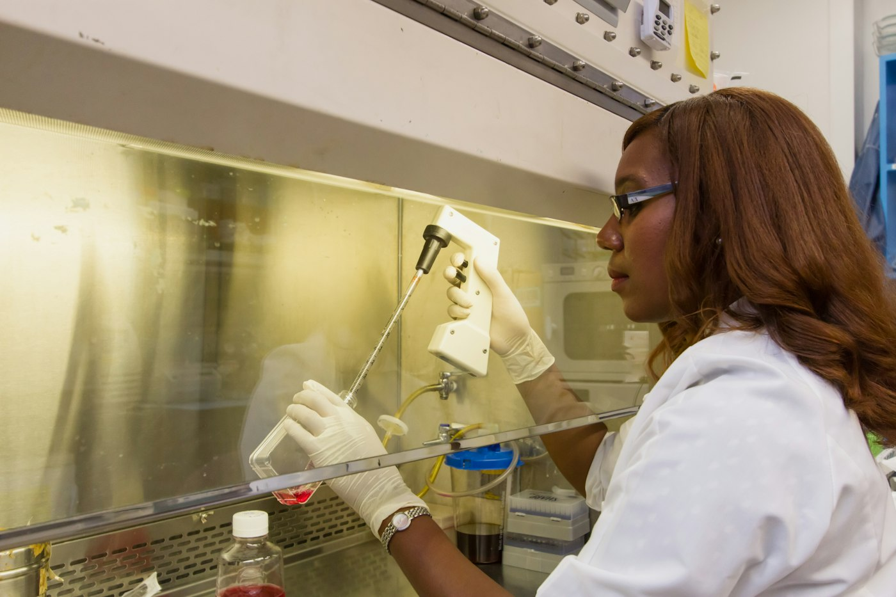

Accueil / À propos
Derrière chaque image, des femmes et des hommes.
Fondateur, médecins, techniciens, accueil : voici celles et ceux qui font CIMBBA, ce qui les a menés à Grand-Bassam et ce qui les anime chaque jour.
DécouvrirDécouvrirOffrir à Grand-Bassam et à ses environs un diagnostic fiable, rapide et humain, pour que chaque patient accède au bon traitement sans perdre de temps.
Dr Prénom NOM
Fondateur, Directeur Général et médecin principal de CIMBBA
Ici, le parcours du fondateur : sa formation, ses premières années de pratique et le moment précis où l'idée de CIMBBA est née.
Pourquoi Grand-Bassam ? Ce qui manquait aux patients de la ville, ce qu'il a voulu changer, et la promesse faite en ouvrant le centre.
Au quotidien, il est aussi le médecin principal du centre : sa spécialité, les examens qu'il réalise et sa façon de rassurer un patient avant un examen.
Formation
- Faculté de médecine — université à préciserDoctorat en médecine · année
- Spécialisation — à préciserÉtablissement · année
- Formation complémentaireGestion, échographie, santé publique…
Parcours
- Expérience hospitalièreCHU, hôpitaux ou cliniques · années
- Création de CIMBBA à Grand-BassamAnnée d'ouverture
- Lancement du showroom de matériel médical2026
Au centre
- Examens réalisésÉchographie, doppler, radiographie… à préciser
- Lundi – VendrediHoraires de consultation à préciser
- SamediHoraires à préciser
Ce qui l'inspire
Le mentor ou la personnalité médicale qui a marqué son parcours, et pourquoi.
La phrase qu'il répète à son équipe, celle qui guide ses décisions.
Ses passions : sport, musique, famille, engagement associatif…
Ici, en quelques lignes, le message du Directeur Général aux patients de Grand-Bassam : ce que CIMBBA leur promet.
Au service de Bassam, étape par étape.
L'ouverture
CIMBBA ouvre ses portes à Grand-Bassam pour rapprocher l'imagerie médicale des familles de la ville.
L'imagerie 24h/24
Échographie et radiographie assurées jour et nuit, pour les urgences comme pour les suivis.
Le laboratoire
Les analyses biologiques rejoignent l'imagerie : bilan et résultats au même endroit.
Les consultations
Médecine générale, gynécologie, pédiatrie, cardiologie, neurologie et rhumatologie.
Le showroom
Ouverture de l'espace de vente de matériel et d'équipement médical.
La suite
Elle s'écrit avec nos patients, nos partenaires et les médecins qui nous font confiance.
Une équipe, neuf expertises.
Chaque membre aura ici son portrait, sa fonction et son ancienneté. Survolez une photo pour la révéler.
 01
01 02
02
05
06Ce qui ne bouge pas.
Précision
Un diagnostic juste est le premier des soins. Chaque examen est fait avec soin et relu avec attention.
Sécurité
Hygiène, protocoles et équipements contrôlés, pour les patients comme pour le personnel.
Proximité
Un centre de ville : on vous connaît, on vous explique, on vous rappelle.
Réactivité
Écho et radio 24h/24, des résultats rapides et des réponses claires à vos questions.